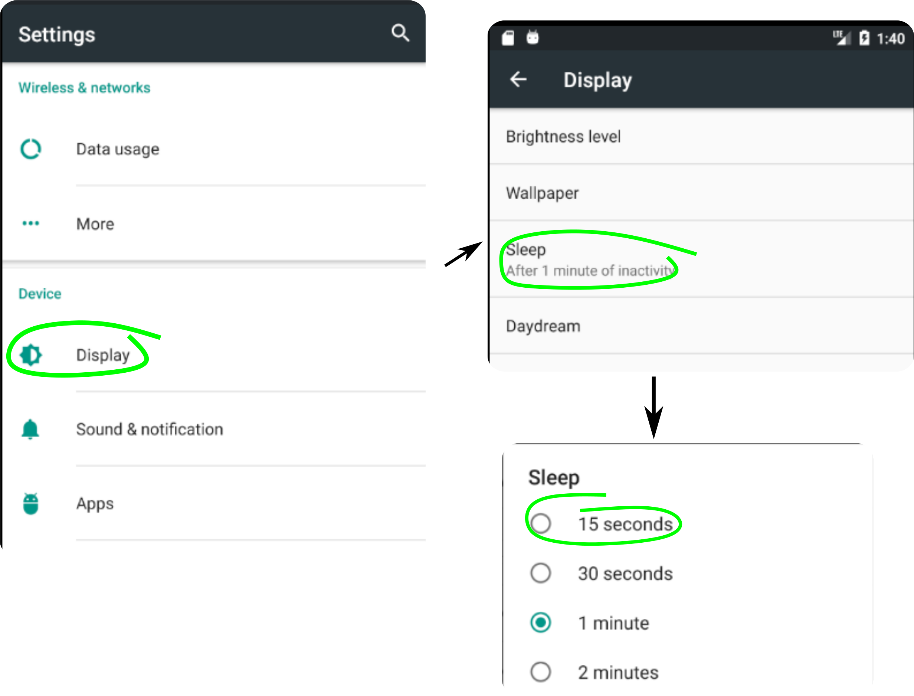

Aesop Player can be used to turn a device into a dedicated audiobook player that prevents accidental changes of mode that would confuse a non-tech-savvy user. With the right configuration all the other apps are hidden from the user. All that is left on the surface is the simple functionality of playing audiobooks.
Before proceeding further, the folks at Google want us to tell you that to use what's called "Full Kiosk Mode" below, you have to use the Android BIND_DEVICE_ADMIN privilege. It's a strong privilege, so they don't want it abused. If you choose to use Full Kiosk mode, there will be more information there. If you don't use Full Kiosk mode, the privilege will remain unused and you can safely ignore its existence. The steps required to use it make it completely clear that you are doing so. It is far easier to suspend or drop the privilege than it is to obtain it.
A Dedicated Player need not run on the latest hardware. Hardware Considerations below discusses the issues you might want to consider in using "previously owned" hardware.
When making a dedicated player, it's important to consider security, but from an unusual point of view. An effective dedicated player should generally be UNsecure, because the objective is ease of use. That means that it should not have any personal information on it, in case it should fall into the wrong hands.
If you intend use the Aesop Player on your personal phone or tablet because you like it as a audiobook player (and we're glad you do), you may want to stop here. However, you might find some of these features helpful if you find the player starting or stopping when you don't want it to.
If you want a dedicated player that is very good at being a book player, the steps below will get you there. (As a note, these settings can make the device hard to use for anything else, even for installing books, so they can be temporarily suspended by Maintenance Mode).
Although it is possible to start from a device that's been used as a personal one, it's difficult to completely remove all the personal information from it, and there's a better way. It's called factory reset. Factory reset removes all information from the device, including any apps that have been added, and restores it to a "like new" condition. In many cases it's a little too much "like new", because it will usually install an "old" (that is, the one that was current when it left the factory) version of Android that hasn't received any updates.
If the device is either brand new, or you otherwise know that it's had a recent factory reset, you can skip this step, but if not, seriously consider doing it for your own protection, both to clear any old data, and to eliminate any potential malware. You don't have to do a factory reset, but it's a good idea.
Every device has its own procedure for doing a factory reset, although they're generally similar. Typically it involves going to the (device) Settings, then to either "Accounts" or "Personal" or "Backup and Reset", and then to "Factory Reset". After clicking the actual "Factory Reset" button, it will ask (sometimes more than once) if you're sure you want to proceed. It's also possible you'll need to provide the device PIN.
An example appears below.
Once the device has been reset, the first time it's connected to the Internet it will probably recognize that it's out of date with respect to current releases, and it will continue to nag you about making updates until you do so. If it does that, in the long run it will be easier to let it update. You should do that when connected to an unmetered WiFi connection because the updates are large. (There's nothing wrong with using a cellular connection either, but it should be unmetered, and in many cases it simply won't update over cellular connections.) Sometimes it will want to update more than once as it works through a history of updates. It's easiest to start an update, go do something else, and come back to click through things (defaults are just fine for Aesop, so you don't need to think hard). Unfortunately this process can take as much as a day or two before it "catches up", but it doesn't require much thought or attention. (But it frequently does require some persistence.)
You'll next need to install Aesop as described in Getting Started, but keep reading first.
If the device has been factory reset (or otherwise thoroughly wiped), there aren't any user accounts on it, and Google Play Store will want to authenticate you. Since you're creating an intentionally unsecured device, your best alternative is to create a new eMail address that has minimal personal information associated with it and connect to Play Store using that. Since the Aesop Player is free, you can skip the step where it asks for payment information (there's a somewhat obscure "Skip for Now" button when it asks.)
Definitely don't create any device users or accounts to install the Aesop Player. In fact you may find later that you need to remove any that might exist.
For experts: …or install the APK directly.
In an audio player the lock screen is just an impediment. It should be disabled. If you just did a factory reset, it will be already be disabled. Otherwise, you'll need to disable it.
Go to Android Settings → Lock screen → Screen lock and choose None.

The display uses the most power. Particularly when running on battery, you don't want the display on when it isn't being used, so a short timeout is a good idea. If it will always be running plugged-in, this isn't an issue and you can skip this. (Note: if you're using Awaken on Proximity Detector, it will inevitably be awakened unintentionally, so a short timeout is particularly useful.)
Go to Android Settings → Display → Screen Timeout and choose a very short timeout. (15 seconds is great.)
If you aren't using a cellular connection, you can turn on Airplane Mode. If you will be using WiFi and/or Bluetooth, you can then turn them back on. There may be other power settings you can use as well; it can't hurt to try them and see how they affect Aesop.
Go to Android Settings →
The location of Airplane Mode differs between Android versions. Sometimes it's directly
available on this screen, sometimes it's under "Network and Internet", and possibly elsewhere.
The settings for WiFi and Bluetooth are usually nearby.
The end user of the player may have physical limitations that cause unintended button presses. There needs to be a way to both give the end user an experience that does not include losing control of the device because it is in Settings mode, and yet allow the caregiver or technical person to change books or other settings. Different end-users and their environments may need differing solutions. (Note: we're creating an unsecured device; this isn't a security feature. The goal is to provide a highly reliable experience for individuals with certain classes of physical limitations.)
The initial mode of the Aesop Player is that a tap of the Settings ("gear") icon will cause it to enter Settings mode. For experimentation, and for a user who is unlikely to hit that accidentally, that works well. However, if there is a risk of accidentally pressing the gear icon and entering settings when the user cannot deal with that, one of the Aesop Settings allows two other choices. One choice is to require that the gear icon be tapped sequentially (and in a fairly short period) five times. The other requires simultaneous pressing in two places on the screen. (A second gear icon appears while pressing the first.) In both cases, the application will remind you what to do if you press the gear icon.
If you intend to use any of the Kiosk modes, you'll also want to set this.
All the applications for remote access tend to be "fussy" and can be difficult to use at times, so some experimentation and persistence both in initial setup and everyday use is recommended.
Go to Aesop Settings (the "gear" icon) → Settings mode access interlock → choose the appropriate mode.
One of the worst things that can happen with an application like this is that it accidentally becomes unusable by the user (as described in Roles). Accidental button presses are a significant risk for this sort of user, and fequently users would be unable to recover from, or even recongize the consequences of, an accidental press of one of the system buttons. (A press that, for example, returned them to a Home screen they don't know exists.) For typical users, the Android system tries to protect users from losing control of the system by making these same buttons very powerful, and hard to disable. However, for this sort of user that instead makes things worse. We want to assure the continued usability of the application by making it (as close as we can to) impossible to accidentally lose control of the system. On the other hand, it's also important that the care-giver and technical person can intentionally gain control when needed. The "Access To Settings" section just above is part of that solution. Kiosk mode is the other part.
To prevent accidental pushes of the system buttons we provide three choices, each with advantages and disadvantages that fit different circumstances.
Simple mode is the only choice for There isn't a kiosk-like solution for really early versions of Android, although Aesop will run on API 17 and up. older devices. On newer devices where Full Kiosk mode or Application Pinning is available, that is strongly preferred. Simple Kiosk can be useful when the device cannot be dedicated to a single use full-time, and for some reason Application Pinning We currently know of no reason that Application Pinning would not work well. Please contact us if you run into any problems. is a problem.
Application pinning is preferred if you have an appropriate device unless actual use shows you need Full Kiosk mode for its stricter controls.
Full Kiosk mode requires a technical person with a strong background and extra equipment on a one-time basis, but requires little if any expertise from the care-giver, and is highly resistant to misuse by the user.
See Full Kiosk Mode for the process of enabling Full Kiosk mode. Full Kiosk Mode requires special Android permissions: that is described in detail on that page.
There is a Settings option to "Drop the privilege required for the full kiosk mode", which is only available if the above process has been completed. This is for expert use, clicking it will require completely redoing the Full Kiosk process.
Caution: Normal use and automatic app and system upgrades will be fine with Full Kiosk mode, but if you will be doing anything unusual with the Aesop Player (specifically, running any private versions of the player), be sure to both disable Full Kiosk mode and also click on "Drop the privilege required for the full kiosk mode" before changing the software. And at that there is a slight risk that you will be stuck in a halfway state that can only be fixed by a factory reset.
The Aesop player will only offer those modes that are actually available on the hardware. On older devices, Application Pinning and Full Kiosk mode won't be visible, and Full Kiosk mode will be un-clickable until it's set up as described above.
Full Kiosk Mode and Application Pinning are What's really going on here is that when the Device Owner permission is held, Android treats the operations to lock the device as kiosk mode requests. Without the permission, it's treated as an application pinning request. closely related in Android. The consequence of that to Aesop is that only one of the two is possible at any given time. If you have the privilege for Full Kiosk Mode, you cannot use Application Pinning; if you don't, then of course you can't use Full mode. If you are using Full Kiosk Mode, Application Pinning offers no additional benefit.Simple Kiosk and Application Pinning are your two best choices initially. You can always change the mode later to one that works better for you.
Go to Aesop Settings (the "gear" icon) → Prevent exiting the application (kiosk mode)… → Preferred Kiosk Mode → choose the appropriate radio button, then "OK".After clicking "OK", there may be more to do:
Several of the features we just enabled, particularly any of the Kiosk Modes, can make it difficult to administer the device, particularly if you're changing books in unusual ways. Maintenance Mode temporarily turns off Kiosk mode, button delay, and settings interlock. It also turns off the audible announcement of book titles. Suppression of title announcement continues for 30 seconds after Maintenance Mode is turned off. This is useful when maintaining the device remotely so it is silent when left in face-down Paused mode.
The effect is immediate: you can leave the player any time you wish when Maintenance Mode is on, as with any ordinary application. The setting for Maintenance Mode is not affected by application or device restarts - Aesop will stay in Maintenance Mode until you turn it off.
Turning off Maintenance Mode restores the pror settings.
Maintenance mode is in practice in effect whenever you are in Settings or managing books.
Go to Aesop Settings (the "gear" icon) → Click the greyed-out "gear" button at the bottom right of the Settings screen.
Turn it off (click the now-bright icon in the same location) before resuming normal use. The bright red "gear" icon is your reminder that it's on in Settings mode, and Aesop displays "Maintenance Mode" on the Books and Playback screens. (You can see that in the image at the top of this page.)When maintaining the player remotely, it's useful to be reminded as to whether it's in face-down-paused mode since you cannot see the physical device. When it is in that state, the word "Paused" is displayed instead of "Stop". Tapping that button will put it back in the Book List state. ("Paused" isn't really different than playing other than nothing is actually playing, and this action works exactly as "Stop" does.) When maintenance is complete, you can return to that book (or any other) and tap Start, and it will immediately (and silently) move to the Paused state if the device is still face-down.
Any reasonably new Android phone or tablet (4.2.x or later) will work. There are many no-longer-current "orphaned" devices out there (even some with minor flaws) that can serve just as well as brand new hardware. Here are some considerations. Since older devices with even purely cosmetic flaws are not much in demand, you may be able to find a bargain at a place that recycles older hardware.
Some brands of phones (e.g. Samsung) have a hardware test mode that may help you determine the health of the device.
Samsung has the S-Voice application that's started with a double-tap of the Home key on some devices. That has to be explicitly disabled manually for Simple Kiosk Mode to be reliable. See here for how.